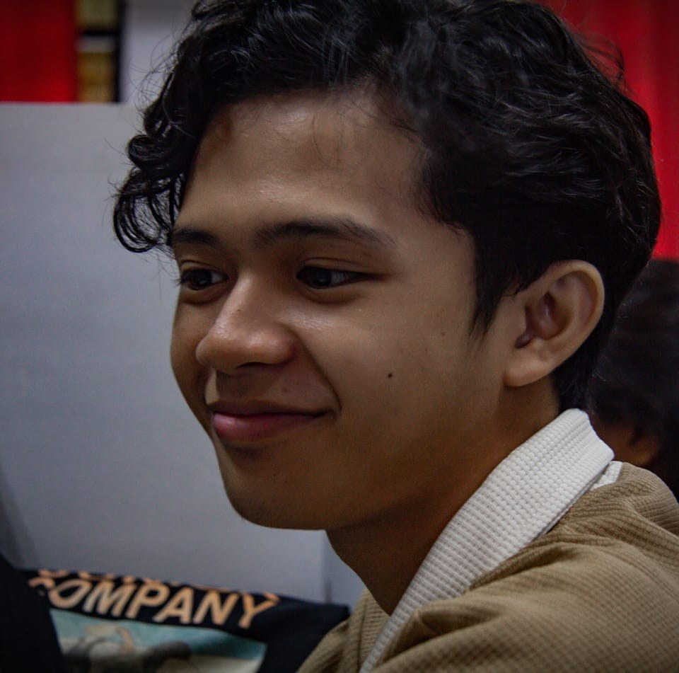
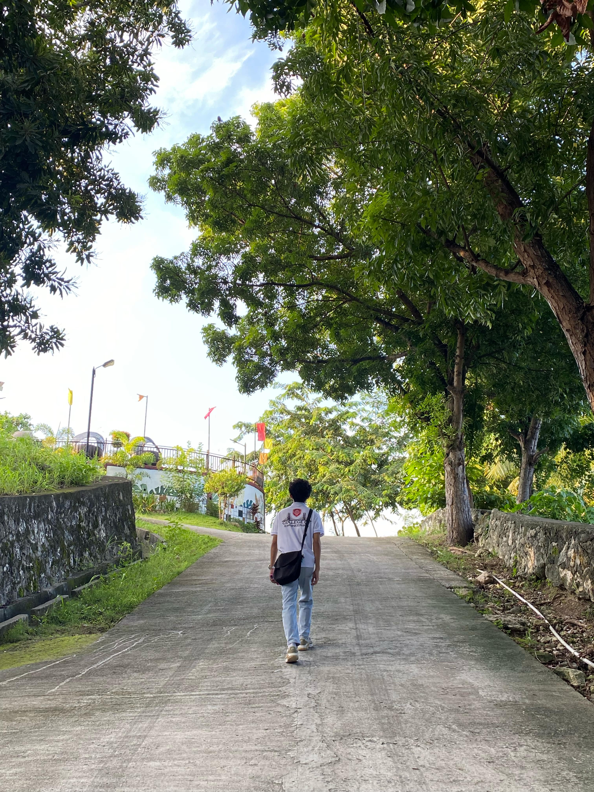

Clean Campuses, Bright Futures: The Vital Role of Cleanliness in University Life

Author/Writer

CTU Danao Campus
captured by Pia
College is a transformative journey, often described as a rite of passage that goes beyond textbooks and lectures. It’s a vibrant tapestry woven with late-night study sessions, newfound friendships, and moments of self-discovery that shape who you are and who you aspire to become. Picture this: a young adult stepping onto campus, filled with dreams and uncertainties, ready to navigate the exhilarating highs and challenging lows of university life. Each experience—whether it’s a late-night debate with friends, a challenging project, or an unexpected setback—becomes a brushstroke on the canvas of their future. As students embrace the chaos and beauty of college life, they embark on a remarkable adventure of personal growth, ultimately learning not just about the world around them but also about themselves.
Embracing New Experiences
One of the hallmarks of college life is the abundance of new experiences. From joining clubs and organizations to attending diverse events and workshops, students are encouraged to step outside their comfort zones. These experiences often serve as catalysts for personal growth.
For many students, college is the first time they encounter diverse perspectives and cultures. Engaging with peers from different backgrounds challenges preconceived notions and fosters empathy. This exposure to diversity encourages students to reflect on their own beliefs and values, paving the way for greater self-awareness and understanding.
Navigating Challenges
Personal growth often stems from overcoming challenges. College can be a demanding environment, with academic pressures, social dynamics, and the quest for independence. Each obstacle faced—be it a difficult course, time management struggles, or interpersonal conflicts—presents an opportunity for growth.
Resilience becomes a vital skill during this journey. Students learn to adapt, seek help when needed, and develop effective problem-solving strategies. By navigating these challenges, they build confidence and realize their capacity to overcome adversity. The process of tackling difficulties not only shapes their character but also prepares them for the complexities of life beyond college.
Discovering Passions and Interests
College provides a unique platform for students to explore their passions and interests. Whether through elective courses, internships, or extracurricular activities, students have the chance to discover what truly excites them. This exploration is essential for personal growth, as it allows individuals to align their studies and career paths with their values and interests.
For example, a student who starts as an undecided major may find a passion for environmental science through a volunteer opportunity or a course in sustainability. This newfound interest can reshape their academic journey and influence their future career choices. By actively seeking out experiences that resonate with them, students cultivate a sense of purpose and direction.
Building Relationships
The relationships formed during college can have a profound impact on personal growth. Friends, mentors, and professors play crucial roles in shaping a student’s experience. These connections provide support, encouragement, and opportunities for collaboration. Engaging in meaningful conversations and sharing experiences fosters a sense of belonging and community.
Furthermore, relationships often challenge students to reflect on their values and behaviors. Through interactions with diverse individuals, students learn to navigate differences, practice empathy, and develop effective communication skills. These interpersonal experiences are vital for personal growth, helping students cultivate a deeper understanding of themselves and others.
Cultivating Self-Reflection
Amidst the whirlwind of college life, taking time for self-reflection is essential for personal growth. Journaling, meditation, and engaging in discussions about values and goals can help students process their experiences and emotions. Self-reflection encourages students to consider their achievements, setbacks, and lessons learned along the way.
This practice of introspection enables students to set meaningful goals for themselves, both academically and personally. By identifying their strengths and areas for improvement, they can develop a growth mindset—an understanding that abilities and intelligence can be cultivated through effort and perseverance.